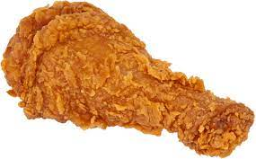

Description
For the perfect spicy and crispy fried chicken, this simple recipe ensures your chicken is packed full
of
flavour and has a great crunch
Taste.com.au
Ingredients
- 2 x 1kg Whole Chickens
- 375ml buttermilk
- 180g dried breadcrumbs
- 115g plain flour
- 2 1/2 tbsp cajun seasoning
- 2 tsp paprika
- Canola oil, to deep-fry
Method
- Cut each chicken into 8 pieces
- Combine the chicken and buttermilk in a large bowl. Place in the fridge for 6 hours or overnight to
marinate.
- Combine the breadcrumbs, flour, seasoning and paprika in a large shallow dish or large sealable
plastic bag.
- Drain chicken, and discard buttermilk. Add a piece of chicken to breadcrumb mixture. Turn to coat.
Transfer
to a large plate. Repeat with remaining chicken. Place chicken in the fridge for 30 minutes to
chill.
- Heat oil in an electric deep-fryer to 180C. If using a large saucepan, heat oil on high heat to
180C.
Deep-fry chicken, in 4 batches, for 2-3 minutes or until crisp and light golden. Drain on paper
towel.
- Preheat the oven to 160C/140C fan forced. Transfer the fried chicken to 2 wire racks, each set over
a
roasting pan or baking tray. Bake for 25 minutes or until the chicken is cooked through.